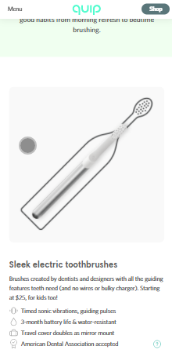
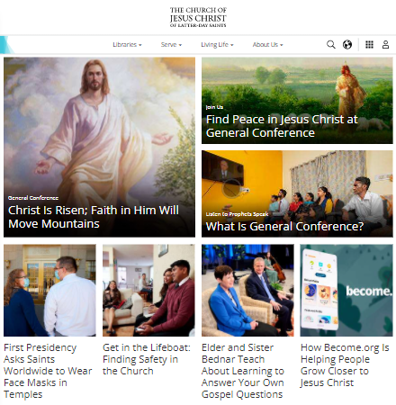

White Space and Clean Design
Quip
Quip harnesses a clean design and has great whitespace throughout the website both on the mobile and desktop version. It exemplifies this because the image and the text feel spaced enough away from each other where it makes a good impression on the user. The design is pleasing and everything is well organized with it as well.
Rule of Thirds
The Church of Jesus Christ
The Church of Jesus Christ of Latter Day Saints does a great job at the rule of thirds. it captures the right amount of each photo for each section and splits the images well. The images capture the readers attention and also allows for an easy way to identify with it as well.
P.A.R.C Contrast
GitHub
Cobalt Intelligence uses good contrast in their design to help make important items of the page stand out. When you first look at the page "Schedule a call now" pops out and draws attention to itself helping the user see that element of the screen.